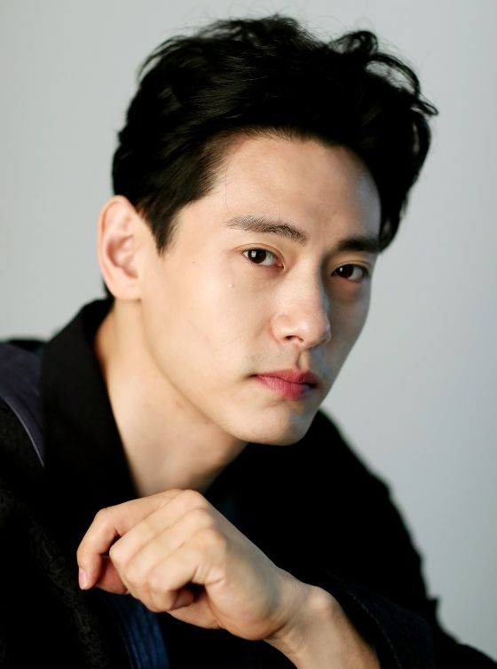

- 유태오
- 류준열
- 도경수
- 서강준
You Tae-o
유튜브 짤로 유태오를 우연히 보았다. 처음 보는 배우였다.
빌런이었는데 선과
악이 공존하는 표정이 너무 자연스러워서 눈길이 갔다.

유태오
나이 40세
아내 니키리 나이 51세
본명 김치훈
출생
1981년 4월 11일 독일 노르트라인베스트팔렌 주 쾰른
국적 대한민국
학력 Lee
Stasberg Theatre and film
Institute(뉴욕)
Stella Adler studio of acting(뉴욕)
Royal Academy of Dramatic Arts(런던)
신체 181cm, 75kg
한국 데뷔 2009년 ''여배우들''
가족
배우자 니키리(Nickki S. Lee)
(1970년 생)
여동생 안나킴 (1990년생)
반려거북 모모(2013 입양)
소속사 씨제스 엔터테인먼트, agenturdorandt
유태오는
1970년 독일로 이민을 떠났다.때문에 작품에서는 연기하는 모습을 보며 아직은
한국어가 조금은 어색한 것을 확인할 수 있다.
유태오는
극중 프리랜서 패션 전문 포토그래퍼 윤재국을 연기한다. 오늘을 즐기며 이 순간에
최선을 다하는 인물로자신이 얼마나 잘생겼으며 멋스러우며 유머러스하고 감각이 좋은지
누구보다 잘 안다.비혼주의자이자 개인주이자며 낭만적 자유연애주의자다. 한량에
나쁜 남자로 보이지만 그에게도 사정은 있다.
제일 이해가 안 가는 행태의 쇼핑몰은
썸네일이 궁금해서 들어갔는데 썸네일의 사진은 어디에도 없는 쇼핑몰이다 그 때는
온라인의 상점임에도 불구하고 폭파시키고 싶다는 욕구가 솟구친다